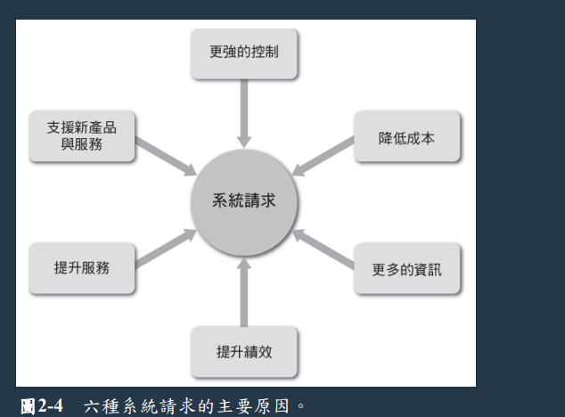
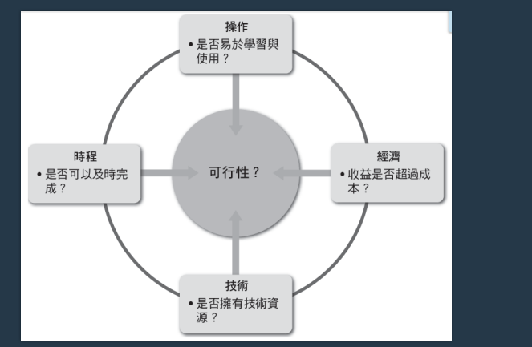
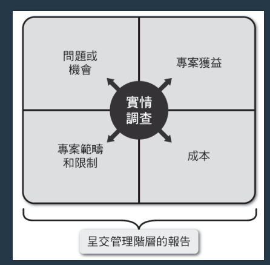
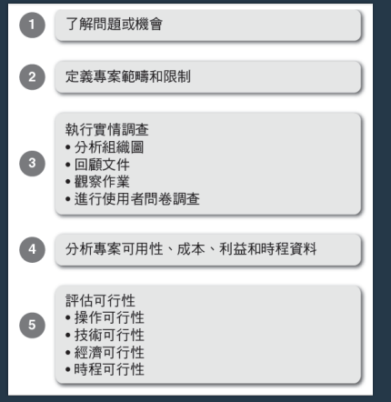

陳杰龍的筆記網站
陳杰龍的筆記網站 主頁
主頁 歸檔
歸檔 分類
分類 關於我
關於我
筆記說明
此筆記用途在於國立屏東大學資訊管理系大三上系統分析與設計重點整理
並非所有人都適用
如果有侵犯到版權的問題在聯繫我，再聯絡我，我在移除
並非所有人都適用
如果有侵犯到版權的問題在聯繫我，再聯絡我，我在移除
策略規劃
- 策略規劃(strategic planning) 是一套制訂長期性的組織目標、策略及資源的流程
- 通廠已反映公司願景、目的及價值，關鍵成功因素，優先權高的短期目標為主
- SWOT 分析，對公司的科技、人力及財務等資源進行檢查
- IT 部門的角色
- 專案能支持商業策略與作業需求
- 專案每一個事件都明確完整
- 專案目標能夠切乎實際及可達成，且與特定宣言、假設、限制、因素及其他需求緊密相連
- 策略規劃工具
- Word、Excel
- 心智圖
- 平衡計分法
- 差距分析
企業個案
- 企業個案 (business case)是指一個提案的提出理由或正當性
- 描述清楚、容易理解
- 清楚描述專案、一個執行的正當性，並對專案財務影響進行估計
- 能回答這些問題
- 為甚麼要做
- 在做甚麼
- 帶來的好處與風險
系統請求
- 大部分資訊專案都從系統請求開始
- 影響資訊專案的因素
- 內部
策略計畫、使用者需求、公司財務 - 外部
科技、顧客、競爭者、政府
- 內部

系統評估請求
- 會有一個系統審查委員會進行系統評估請求
- 委員會可以讓決策不受到個人偏見
- 可能委員會會有派系
- 委員會運作才會開始處理這些請求
- 請求必須有一致性、容易理解且清楚的指示、申請程序流暢
- 可行性
- 花多少時間、經歷才可以完成
- 進行初步事實調查

評估請求的可行性
- 這邊的人們為消費者與顧客、經理
- 操作可行性
- 人們是否支持該專案
- 新系統可以對人力要求降低嗎
- 新系統是否要重新訓練使用者
- 使用者是否在新系統規劃時要加入他們的意見
- 操作可行性
- 會對人們產生什麼樣的負擔
- 公司商譽、形象會有甚麼風險
- 法律問題、道德問題
- 是否會與公司其他事情發生衝突
- 技術可行性
- 開發、採購、安裝、操作用到的技術資源
- 硬體是否足夠
- 新舊系統整合
- 公司需要新增什麼樣的資源嗎
- 需要增加技術專家嗎
- 是否要用到雛形(prototype)
- 開發、採購、安裝、操作用到的技術資源
- 經濟可行性
- 專案效益是否會大於成本，包括人力、財力、物力
- 有形成本(tangible costs) 通常可以用金錢衡量
- 無形成本(intangible costs)肯定會影響公司績效
- 有形利益 (tangible benefits)可以是來自花費的減少，或收益的增加
- 無形利益 (intangible benefits)難以透過金錢衡量，卻對公司十分重要
- 時程可行性
- 是否可在允許時間內完成
- 如果加速開發會有甚麼風險
- 專案時程表
- 設定優先順序
- 什麼樣的事情要先做，其他可以慢做
- 影響優先順序的因素
- 新系統是否可以增加利益
- 是否可以降低成本
- 能讓人們更喜歡
- 可讓管理者選擇是否進行的專案為自由裁量專案(discretionary projects)
- 不可讓管理者選擇是否進行的專案為非自由裁量專案(nondiscretionary projects)
- 有些非自由裁量專案是可預期的，例如薪資調整、稅率調整
初步調查
- 初步調查規劃
- 主要的管理者、使用者及IT人員見面，並描述這個專案、說明你的職責、回答問題及徵詢意見
- 「問題」，在訪談時過度使用會讓人覺得厭惡
- 詢問使用者需要甚麼新的功能，而非遇到困難
- 交出報告示意圖
 - 初步調查五步驟 
- 初步調查
- step1: 了解問題或機會
- 描述問題或機會
- 如果改進會有甚麼好處
- 牽涉到那些部門
- 有些潛在問題沒辦法被發現
- 使用魚骨圖或石川圖表達
- step2: 定義專案範圍與限制
- 專案範疇 (project scope)是指定義出具體的專案邊界或範圍
- 建立清單並分成必須做、應該做、可以做、不要做
- 避免形成專案蔓延(project creep)的情況，專案範疇應該盡可能定義清楚
- 識別出限制 (constraint)

- step3: 進行實情調查
- 蒐集專案可用性、成本、利益以及時程的資料
- 分析組織圖
- 訪談題目券任
- 紀錄並回顧文件、使用者問卷調查
- 分析資料，帕列圖(Pareto chart)、散布圖(scatter diagram)
- step4: 分析專案可用性、成本、利益和時程資料
- 取得那些資訊、如何蒐集、分析
- 如何訪談，訪談對象為誰
- step5: 評估可行性
- 操作可行性、經濟可行性、技術可行性、時程可行性
- 總結
- 提供一份準備報告給管理者
- 需要有系統請求摘要、調查發現、解決方案、可行性評估、期望利益
- step1: 了解問題或機會